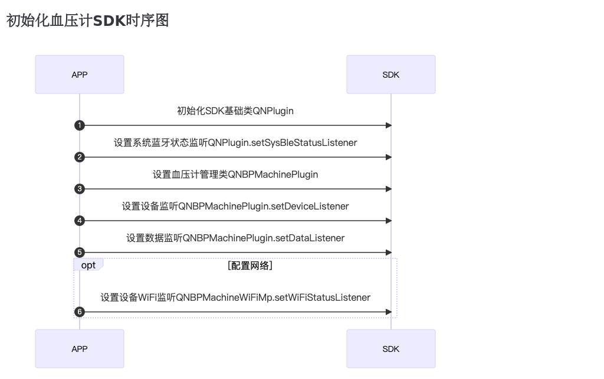
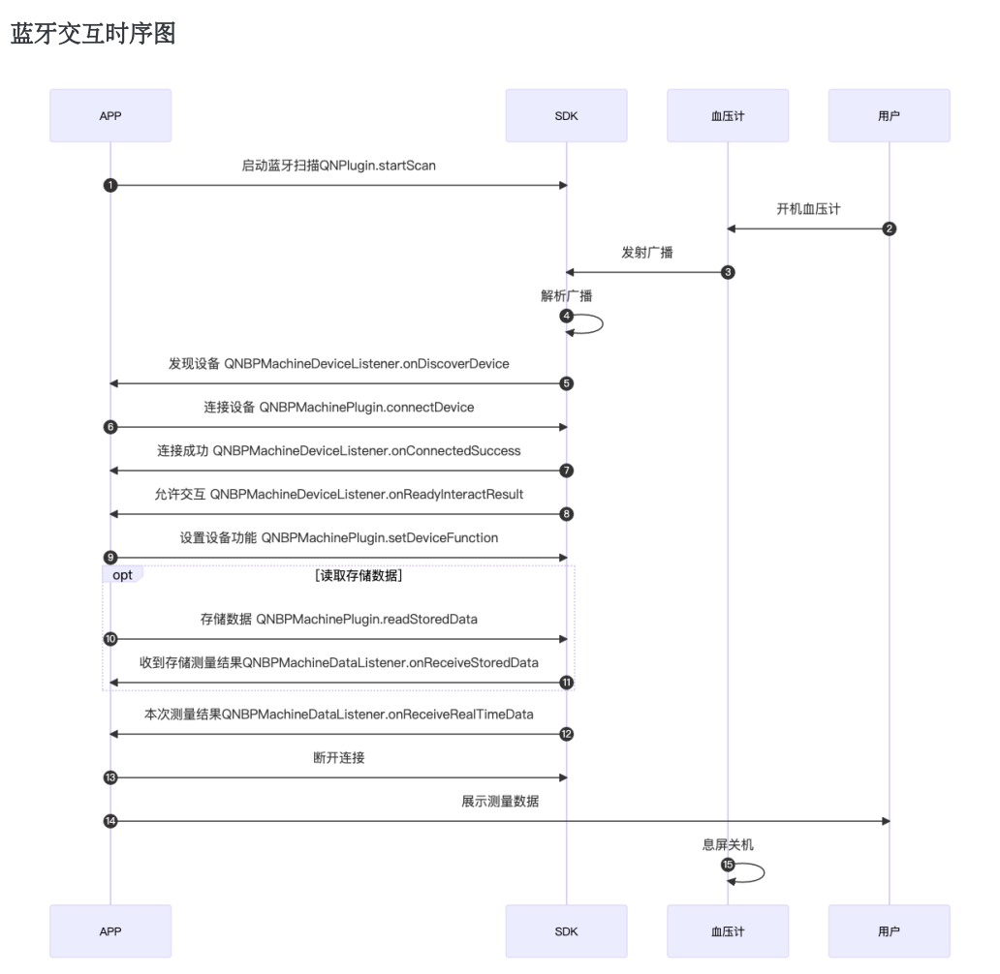
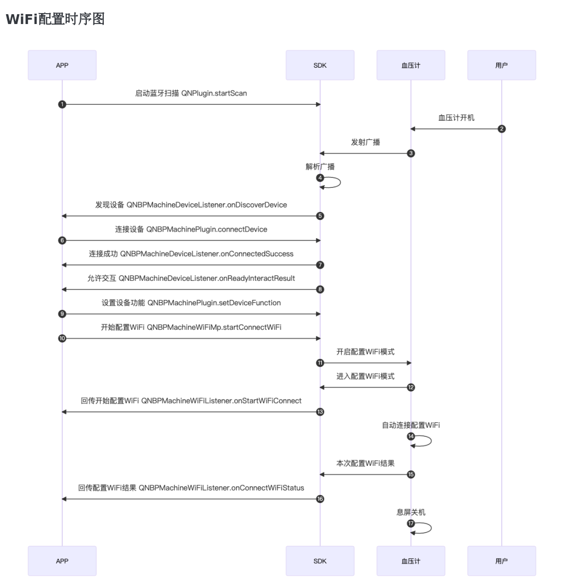

Yolanda血压计产品介绍
关于设备:
Yolanda智能血压计是我司推出的一款具有蓝牙WIFI双模通讯功能的智能血压计设备。 设备一次测量时间在30s内。可存储两组用户的测量数据，每组可存储99条测量数据。充满电后约可使用352次。 设备含语音播报功能.
关于血压标准:
设备中的血压标准依据《中国高血压防治指南2018年修订版》中，家庭血压判断范围来设置，不可修改。但用户可以依据具体使用场景，来确定合适的判断范围。 如家庭测量情况下，收缩压≥135或舒张压≥85，则可判断为高血压。在诊室测量情况下，收缩压≥140或舒张压≥90，可判断为高血压。
蓝牙及WIFI功能:
用户可以通过蓝牙功能获取血压计的测量数据及历史记录数据，也能在连接WIFI的情况下远程获取血压计的测量数据。 使用WiFi数据传输功能需要服务器集成Docker。
血压计使用时序图


